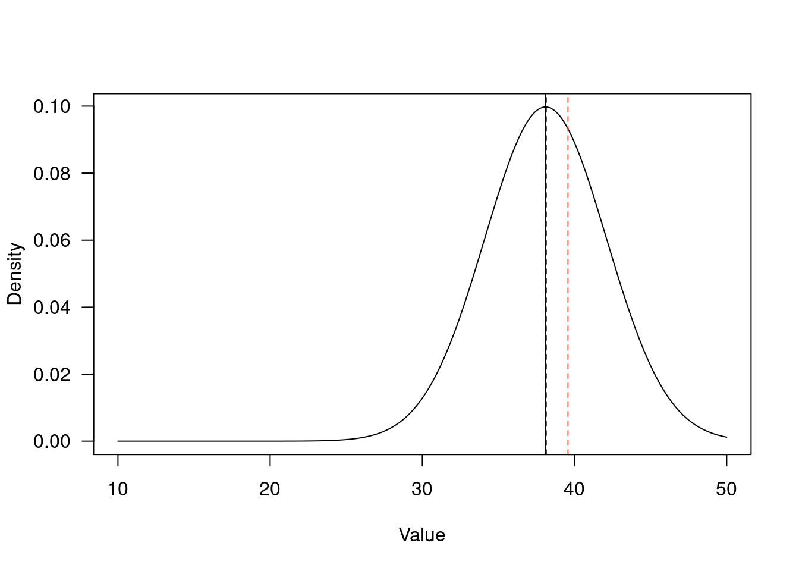

4 Inference
One of the goals of statistics is to make inference about the natural world. We make inference based on observations taken on our sample. In the Arctic butterfly example, the sample was the 2501 individual butterflies that Daly et al. measured. The observations are not just the length of each individual, but also their species identity (and lots of other data we did not dig into yet). In statistics, we assume that our sample is representative of the population. This does not mean a population in the ecological or evolutionary sense, but rather the universe that we are trying to make inference about. The way we defined the population for the t-tests was at the level of the species, i.e. we assumed the 968 Boloria chariclea individuals represented that species for the purposes of inference. The properties we measure on our sample are the variables at our disposal, i.e. species, length, growing degree days, region, etc. each matched to a single observation.
When making inference, we can assume that the sample mean is an unbiased estimator of the population mean if:
Individuals are randomly selected from the population. i.e. we did not just choose the closest butterflies, or the prettiest butterflies, or the slowest butterflies, etc.
Observations are independent of each other. i.e. not all the butterflies came from the same site, or the same person measured one species and a different person measured the other species, etc. This assumption is rarely met in ecology (…including in our t-tests that we did above).
The population parameter we are interested in can be described as a random variable, meaning that it comes from a probability distribution.
In calculating the sample mean \(\bar{x}\) and sample variance \(s^2\), we are trying to make inference about the population mean \(\mu\) and variance \(\sigma^2\). The latter are our population parameters. This is why you will sometimes hear the phrase ‘parametric’ when referring to statistics or modeling when there are parameters, whereas ‘non-parametric’ stats do not try to estimate or make inference about population parameters.
Frequentist statistics assumes that population parameters are fixed, and the data are random. Bayesians, on the other hand, assume that the data are fixed and the parameters are random. In other words, frequentists assume that the world works in a certain way and we observe it imperfectly each time we collect a sample, while Bayesians tend to think more in terms of probability distributions that could have generated the data that we observed.
We can simulate data based on fixing the underlying population parameters, then seeing how closely our sample approximates the population.
4.1 Lyrebird song repertoire
Lyrebirds can learn new songs from their environment, making it possible for individuals who have been exposed to more songs to have a larger song repertoire. As a motivating example, let’s pretend we are trying to understand the song repertoire of a population of lyrebirds (in this case, in both the ecological and statistical sense!). For the sake of this example, we will say that we know that the true population mean diversity of songs that lyrebirds in the population know is 38.1. We will also fix the standard deviation to 4. These are our population parameters.
# define our population parameters
true_mean <- 38.1
true_sd <- 4
# Now, we go out into the forest and sample some individuals from the population
# by recording the diversity of songs they know. Let's say we observed 10 individuals.
n.obs <- 10
song_rep <- rnorm(n.obs, true_mean, sd = true_sd)
# What is the mean estimated from this sample?
mean(song_rep)## [1] 38.13602# How close it is to the true population mean?
xvals <- seq(10, 50, 0.01) # set up a reasonable range of x values for plotting purposes
# first, plot the *true* probability density over this range of values
plot(x=xvals,
y=dnorm(xvals, mean = true_mean, sd = true_sd),
type="l",
ylab="Density",
xlab="Value",
las=1)
abline(v=mean(song_rep), lty=2) # sample mean from our 10 observations
abline(v=true_mean, lty=1) # true mean
# What if we sampled a different 10 individuals?
abline(v=mean(rnorm(n.obs, true_mean, true_sd)), lty=2, col="tomato2") # a new sample